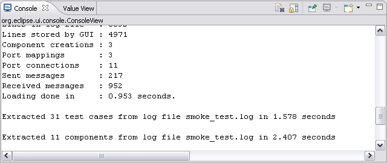

Enable Console Printout
The TITAN Log Viewer will produce a detailed output to the
console view if this feature is enabled. Default is enabled (checked).

The name of the System Under Test
The name of the component System Under Test in the Message Sequence Chart. By default empty (no name given).
Display value content as
Value contents can be displayed as a graphical tree or as
text. Default is Graphical Tree.
-
Graphical Tree
The Graphical Tree presentation will look like following:

-
Text
The Text presentation will look like following:

Principle when adding components
The selected principle when adding components decides whether the extracted components should replace or be appended to the existing Visual Component Order list. If replace is chosen, any existing components will be removed from the Component Visual Order list and extracted components will be added. The added order is as found in the log file. If append is chosen, any existing components will remain in the Component Visual Order list and extracted components will be added if they do not already exist in the list. Extracted components are always added on project level (in properties of the project where the log file remains). The default value is append.
Open properties after extracting components
If the Open properties after extracting components option is enabled, the properties dialog will open after the components have been extracted. Default is enabled (checked).
Start displaying the MSC view at
The start of displaying the message sequence chart can be set to the top, the bottom or the first setverdict event when the test case is rendered. Default is top.
Default behavior in Projects tab
Sets default behavior when double clicking or pressing enter when a log file is selected in the Projects tab of the Navigator. Can be set to either Extract Test Cases or Open Text Table view. Default is Extract Test Cases.
Default behavior in Test Cases tab
Sets default behavior when double clicking or pressing enter when a test case is selected in the Test Cases tab of the Navigator. Can be set to either Open MSC view or Open Text Table view. Default is Open MSC View.
Default behavior in MSC view
Sets default behavior when double clicking or pressing enter when an event is selected in the MSC view. Can be set to either Open Value View or Open Text Table view. Default is Open Value View